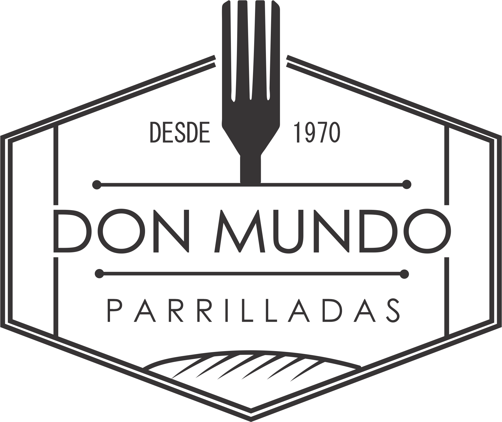

<div class="card mb-3" style="width: 100%; border-width: 0px;">
    <div class="row no-gutters">
        <div class="col-md-4">
            
        </div>
        <div class="col-md-8">
            <div class="card-body">

                <h4 class="card-title">QUIENES SOMOS</h4>
                <br>
                <p class="card-text" style="text-align: justify; font-size: 20px; font-weight: bold;">
                    <strong>Cocina impulsada por fuego “Brasa y Fuego”, “Fuego y Carbón”.</strong> <br> Estos elementos impulsan nuestra cocina y mantienen nuestra comida honesta y sabrosa. Parrilladas Don Mundo por sus 20 años de servicio. Y preservadores
                    del legado de la conservación de las carnes por medio del humo, herencia de 4 generaciones y que fue adquirido el oficio del sacerdote Hermelindo Anaya para la familia Rangel Nájera. Que vengan muchos años más y también heredando su
                    legado a las siguientes generaciones</p>
            </div>
        </div>
    </div>
</div>